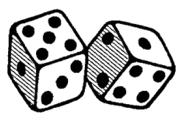
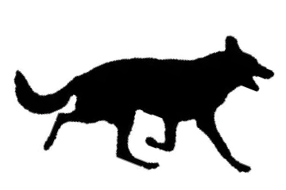

Preambles
is a set of poetic prompts and lyric games for walks. Perform them alone or with others, on physical and metaphysical planes, across worlds and dimensions.
Preambles
is brought to you by Helen Shewolfe Tseng.